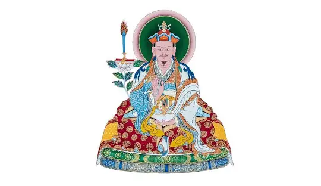

2020 校對版：2011/09/17-18 秋吉林巴伏藏：大圓滿三部(2)
- 轉載自~作夢者班論壇
-
（連載 2）2011/09/17 01:30AM 秋吉林巴伏藏：大圓滿三部（Chokling Desum）（2）2020/08/21-26ed
- 之所以我們有大圓滿三部，這與噶拉多傑的《三句擊要》有關，基本上我認為這是最重要的。因為《三句擊要》是教法的精華，我們應如何學習教法、如何得到傳承、上師如何給弟子指授，我們如何實修乃至證悟的種種都與噶拉多傑《三句擊要》有關。一般而言這稱「基松內得」，巴楚仁波切也寫下釋論，這也很廣傳，但不是巴楚仁波切發明的，而是根據噶拉多傑的《三句擊要》。所有大成就者特別是大圓滿傳承，各有其遺教，但噶拉多傑的《三句擊要》，對學習大圓滿教法很重要。
- 因此，首先就是直指，這是第一個，（藏文）藏語來說是這三個。（藏文）指上師直指弟子，什麼是大圓滿的意思，大圓滿是我們的本性但我們不知道，所以上師具有這知識而介紹給弟子。這是要做的第一件事，也是噶拉多傑解釋的。因此我們有心部系列，這是以比較漸進的方式來做以變得較為具體，例如上師直指，弟子能夠瞭解而發現其真實本性，有時這需要比較漸進的方式。
- 因為我此生也有這樣的經驗——不是我個人方面，當我剛開始教授之前，多年來我心態還是像學生，我覺得自己還需要學習。十六世大寶法王送來一些人要求我給予教授，但兩次都被我拒絕。但隨後這樣也行不通，還是端賴情況而定，不然許多人還是以比較哲學的方式來學佛法，不知道佛法的真義，所以我便開始教授。
- 一開始我是以口訣部開始教，我也教授皈依和發菩提心還有「容申」（輪涅分判）等，但兩年後我看到我學生，他們活在非常美好的幻想中，他們以為自己瞭解大圓滿，我想：這真的不好，應該要有具體而微的基礎。基本上也不是像學些前行修法，這些沒問題，但對大圓滿知識來說不夠，因此我也稍微去學了大圓滿心部，因為大圓滿三部我得到了所有傳承，但都是比較官方的方式，沒有詳細解釋我們修法。
- 所以我瞭解到，例如像是第一階段寂止（Shine），第二階段稱「米唷瓦」（miyowa），而不是稱勝觀（lhagthong，拉通）。一般我們在經教和密續有很出名的止和觀，所有教法都這麼稱也比較官方，但之所以不稱勝觀，有時在釋論中說到拉通米唷瓦，但名稱還是米唷瓦。
- 當我研究時我發現這其實是什麼意思呢？因為在大圓滿教法，不是僅處於空性狀態，當我們說到勝義諦這只有空性，但還具有無盡的潛能的知識。因為大圓滿始終介紹kadag和lhundrub，前者是本初本淨那就是空性，那就是我們說的寂止狀態，安止狀態（calm state）或空性；但在大圓滿教法中勝觀的真正意思，運動也是指我們認知我們的潛能——運動（動態）——乃我們真實本性之一部分。
- 經教中一般沒有這種知識，例如在經教修法中，一想到有運動，不是去融攝運動而是拒絕它，像禪（Zen）的修行者維持專注於一境於空性中，這是經教的特色，但金剛乘有比較多動態方面的知識。例如我們修法，金剛乘修的方式就和經教非常不同。
- 例如有些西方人說想要禪修或只喜歡冥想打靜坐，而不太喜歡像是薈供等，當他們看到金剛乘修法而認為不是在禪修，認為禪修應該坐著專注一境方式，但金剛乘並非如此。
- 金剛乘認知運動是我們真實本性的一部分，所以唱歌、跳舞、移動等一切事情都是為了融攝，因為知道是我們真實本性的一部分，而不用捨棄。經教之修道特色稱為「朋朗」即出離道，認為這些都是負面所以要出離。金剛乘的修法則是「覺朗」，指轉化，煩惱轉化，五蘊轉化為五方佛的報身顯現，這就是金剛乘的特色。
返回主頁